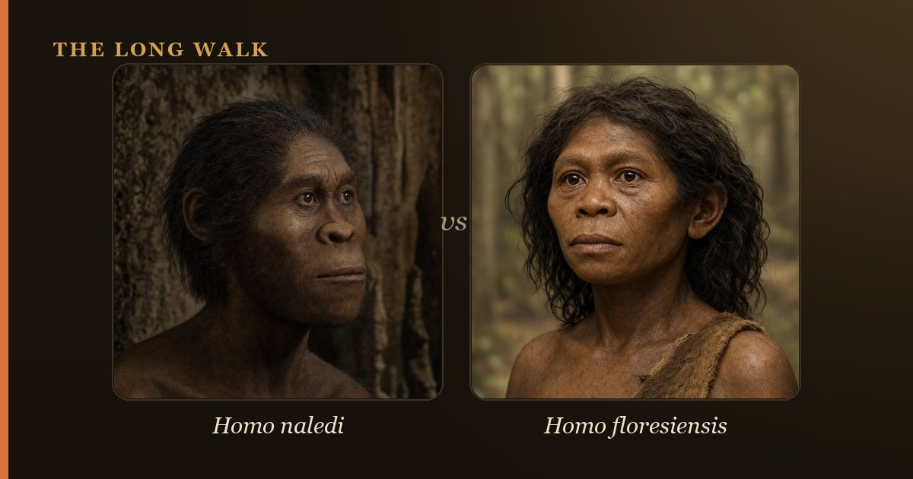

Homo naledi, discovered in South Africa's Rising Star cave in 2015, is a small-brained, mosaic-anatomy hominin who may have deliberately buried its dead 335,000 years ago. Homo floresiensis, the "Hobbit" from Indonesia, was even smaller and survived to around 100,000 years ago, likely as an island-dwarfed descendent of Homo erectus. Both species overturned the old assumption that brain size and time always marched together: small brains did not equal ancient dates. They were not closely related, but shared a lesson: human diversity ran deeper than previously imagined.

For over a century, paleoanthropologists assumed a simple rule: bigger brains meant more recent humans. Large-brained Homo sapiens came last; smaller-brained ancestors came first. Then, over the last 20 years, two remarkable discoveries shattered that assumption. Homo naledi in South Africa and Homo floresiensis in Indonesia were both small-brained, primitive-looking humans who survived thousands of years closer to the present day than anyone expected. They force us to rethink not just human evolution's timeline, but its complexity.
These two species did not live near each other, were not closely related, and were not ancestors of each other. Yet their existence together tells a powerful story: human evolution was messier, more branched, and more regionally diverse than our old linear models ever captured. Understanding the differences between these two astonishing hominins reveals why that matters.
| At a glance | Homo naledi | Homo floresiensis |
|---|---|---|
| Age | 335,000–236,000 years ago | 100,000–60,000 years ago |
| Location | Dinaledi Chamber, Rising Star cave, South Africa | Liang Bua cave, Flores, Indonesia |
| Brain size | 465–560 cubic centimeters | 380–420 cubic centimeters |
| Height & Mass | ~1.4 m tall; ~40 kg | ~1.06 m tall; ~25–30 kg |
| Tools & Behavior | No definite tools; possible mortuary placement | Stone tools; hunted dwarf Stegodon |
| Distinctive features | Curved fingers & climbing shoulders; human feet & long legs | Extreme dwarfism; small hands; reduced molars |
| Likely origin | Descended from earlier African Homo (possibly H. habilis or H. erectus) | Island dwarfism of Homo erectus (or earlier small Homo) |
Who was Homo naledi?
In 2015, paleoanthropologist Lee Berger and a team exploring South Africa's Dinaledi Chamber announced the discovery of over 1,500 fossils representing at least 15 individuals of a previously unknown human species: Homo naledi. The name comes from the Sotho word for "star," a fitting tribute to the rising star that guided explorers into this remote limestone cave. H. naledi was small—barely reaching 1.4 meters (4’7”) and weighing around 40 kilograms (88 pounds)—with a brain volume of 465–560 cubic centimeters, roughly the size of an orange.
What makes H. naledi remarkable is its mosaic anatomy: a patchwork of primitive and advanced traits. Its hands had long, curved fingers suited for climbing, and its shoulders flared wide in the manner of tree-dwellers. Yet its feet were almost entirely human, built for upright walking across open ground. Its legs were long and slender. This combination suggests H. naledi moved comfortably in both trees and on the ground, a lifestyle that had mostly vanished from the human lineage hundreds of thousands of years earlier.
The controversial claim: Homo naledi may have deliberately placed its dead in the deepest, most inaccessible part of the cave—a form of mortuary behavior previously thought unique to much later, larger-brained humans. No stone tools have been reliably linked to H. naledi, yet the careful placement of remains suggests intentional behavior and possibly even a concept of death. Whether this reflects true symbolic thought or a more limited burial instinct remains hotly debated.
Who was Homo floresiensis? Meet the Hobbit
In 2004, a much smaller skeleton emerged from Liang Bua cave on the Indonesian island of Flores. Researchers nicknamed it the "Hobbit"—Homo floresiensis measured only 1.06 meters (3’6”) tall and weighed around 25–30 kilograms (55–66 pounds). Its brain was tiny: 380–420 cubic centimeters, smaller even than H. naledi and well below the range of modern chimpanzees. Yet, critically, H. floresiensis was not a primitive ape-human hybrid. It made sophisticated stone tools, hunted large game, and survived in a complex island ecosystem.
The most accepted explanation for H. floresiensis's extreme smallness is island dwarfism: a process by which isolated populations on islands evolve smaller body size because large bodies consume more calories. On Flores, with limited resources, smaller bodies became advantageous. H. floresiensis likely descended from Homo erectus populations that reached Southeast Asia over a million years ago, then shrank over many thousands of years. Some researchers propose earlier origins, perhaps from an unknown, small-bodied Homo species, but Homo erectus remains the most parsimonious ancestor.
H. floresiensis made stone tools of surprisingly refined quality, including spears and microblades. Most strikingly, it hunted dwarf Stegodon, an extinct relative of elephants that also shrank on the island. H. floresiensis and dwarf Stegodon were locked in an evolutionary arms race of reduction, each driving the other smaller. This behaviour reveals that despite a brain the size of a grapefruit, H. floresiensis was capable, focused, and social enough to coordinate hunts.
Small brains, surprisingly late: rewriting the timeline
The most revolutionary aspect of both H. naledi and H. floresiensis is their recent age. Conventional wisdom held that human evolution followed a straightforward ladder: small-brained early forms gave way to progressively larger-brained forms as time went on. By this logic, any human with a small brain should be old—several million years old.
H. naledi shattered that assumption. At 335,000 years old, it lived as recently as some populations of Homo neanderthalensis in Europe. H. floresiensis survived to roughly 100,000–60,000 years ago, overlapping in time with late Homo erectus in other parts of Asia and with early Homo sapiens in Africa. Both species prove that small-brained humans were not museum pieces confined to the deep past. They were contemporary with, or even later than, our own species in some regions.
This discovery forces us to abandon the linear, progressive view of human evolution. Instead, we now recognize that human evolution was deeply regional and highly branched. Different human species coexisted; different body plans persisted; and brain size was not destiny. Evolution is not a highway toward bigger brains; it is a landscape with many paths, dead ends, and unexpected survivors.
Are Homo naledi and Homo floresiensis related?
Despite their similarities—small brains, small bodies, mosaic anatomy, recent survival—H. naledi and H. floresiensis were not closely related. They lived on opposite sides of the Indian Ocean, separated by vast ocean and thousands of miles. Their small size arose independently through different evolutionary pathways.
H. naledi likely descended from African populations within the genus Homo, possibly early Homo erectus or an even earlier African Homo species. Its ancestry is rooted in the open savannas and caves of southern Africa. H. floresiensis almost certainly came from H. erectus populations that migrated to Southeast Asia over a million years ago, then dwarfed in isolation on an island. Their small brains may reflect convergent evolution (independent evolution of similar traits), or they may simply retain primitive features their ancestors carried—features that larger-brained species abandoned but H. naledi and H. floresiensis never did.
Geographic isolation, environmental pressure, and the accidents of mutation shaped them into two very different small-bodied humans. The fact that they are unrelated yet so similar underscores an important truth: when survival pressures change, different lineages can arrive at similar solutions. Small size, in both cases, worked.
Why they matter: lessons for understanding human evolution
Homo naledi and Homo floresiensis rewrote the story of human diversity. They teach us that the human family tree is not a neat ladder but a dense, interconnected bush. Our ancestors did not all live in a neat chronological sequence. Multiple human species, with wildly different body plans and brain sizes, thrived at the same time in different parts of the world.
Both species also challenge our assumptions about what it takes to be human. H. floresiensis, with a brain the size of a grapefruit, made tools and hunted cooperatively. H. naledi, with slightly larger brains, may have buried its dead. Neither has the large brain we once thought essential to human-like behavior. This suggests that humanness is not a single trait that appeared all at once; it emerged in pieces, at different times, in different places.
Finally, these two species remind us that evolution has no direction, no goal, and no inevitability. Homo sapiens' eventual global dominance was not written into human evolution from the start. In their own times and places, H. naledi and H. floresiensis were fully successful, fully adapted humans. The fact that we eventually replaced them is simply history, not destiny.
Compare where these two small-brained late survivors sit on the interactive deep-time tree.
Explore the family tree →Frequently asked questions
Who was Homo naledi?
In 2015, paleoanthropologist Lee Berger and a team exploring South Africa's Dinaledi Chamber announced the discovery of over 1,500 fossils representing at least 15 individuals of a previously unknown human species: Homo naledi.
Are Homo naledi and Homo floresiensis related?
Despite their similarities—small brains, small bodies, mosaic anatomy, recent survival—H. naledi and H. floresiensis were not closely related. They lived on opposite sides of the Indian Ocean, separated by vast ocean and thousands of miles.
- Berger, L.R. et al. (2015). 'Homo naledi, a new species of the genus Homo from the Dinaledi Chamber, South Africa.' eLife 4. elifesciences.org
- Brown, P. et al. (2004). 'A new small-bodied hominin from the Late Pleistocene of Flores, Indonesia.' Nature 431. nature.com
- Smithsonian Human Origins — Homo naledi. humanorigins.si.edu